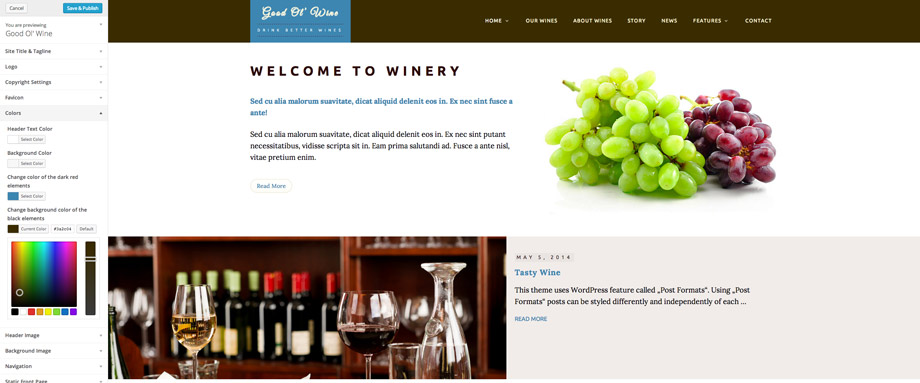
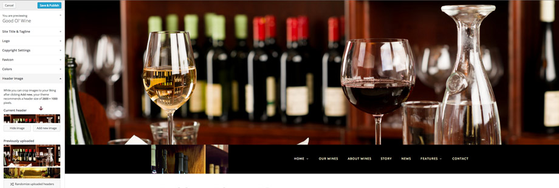
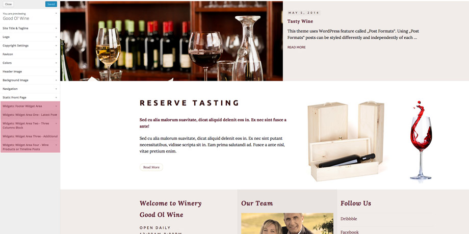
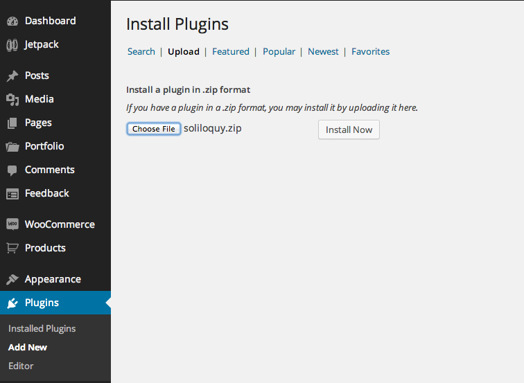
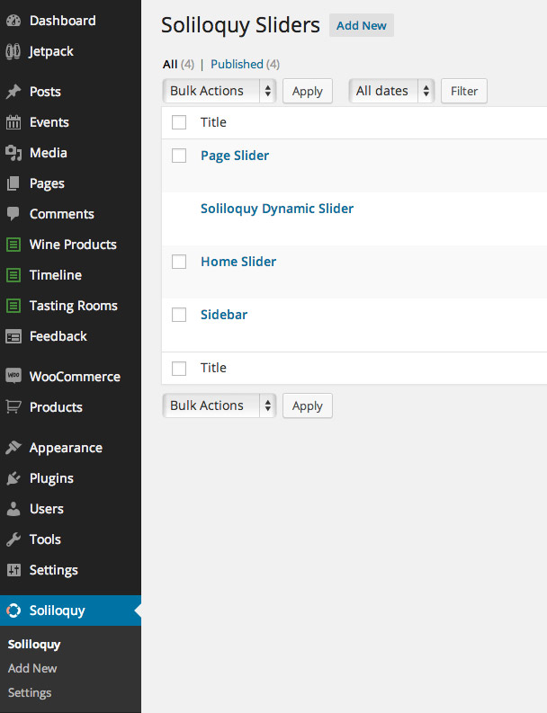
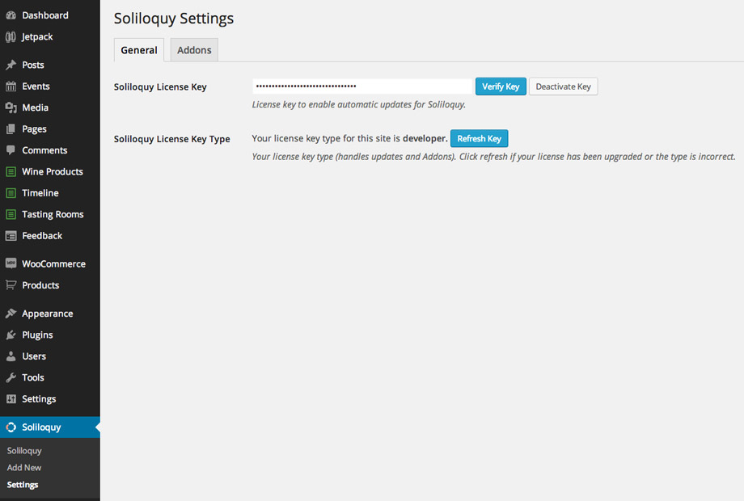
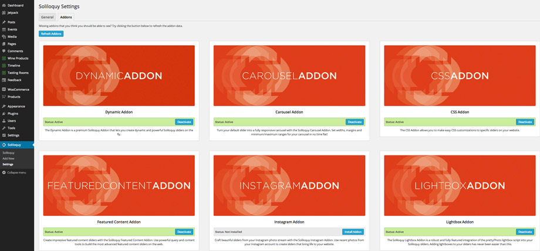
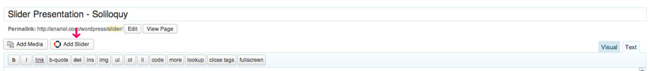
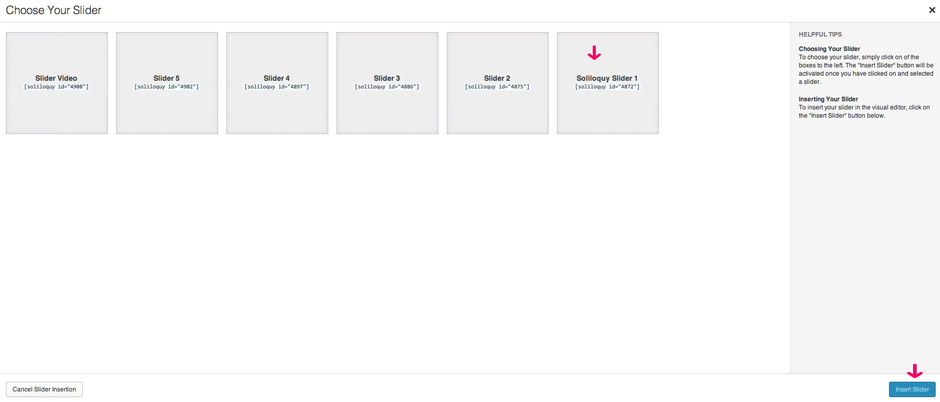

Good Ol' Wine - Wine and Winery WordPress Theme
Good Ol' Wine is a beautiful responsive WordPress theme perfectly suited for wine enthusiasts and wineries.
It is an easy to use theme with responsive layout that looks great on any device, big or small. It is compatible with Major Browsers, Smartphones and Tablet's.
Good Ol' Wine theme uses basic, core WordPress options (pages,post and widgets) to create user friendly site with a lot of useful features.
Jetpack
Good Ol' Wine features "Jetpack" plugin for WordPress that supercharge your website with the features so far only available for WordPress.com. Special Jetpack feature we used is "Jetpack Widget Visibility" that allows you to have different sidebar content on different pages using the same sidebar. This gives you a great amount of creative freedom!
WooCommerce
It also features a "WooCommerce" plugin that is styled to visualy fit the theme as shown in the live preview.
Soliloquy Slider
Included with the theme is a full version of the amazing Soliloquy Slider. This slider can be used within pages, posts and widgets and has many different options to choose from!
The Events Calendar
It also features a "The Events Calendar" plugin that is styled to visualy fit the theme as shown in the live preview.
Widgetized Areas
Widgetized areas (Widget Area One, Widget Area Two, Widget Area Three and Footer Widget Area) are higly customizable and give numerous possibilities with just a couple of mouse clicks. Let me explain.
In widget areas you can use as many widgets as you want and it will adjust itself to the number of widgets you choose. For example, if you choose to have one widget it will spread across the whole area and create one column. If you choose two widgets, the two widgets will be placed in two columns. Maximum number of columns in one row is three therefore within one row you can have up to three widgets. If you however choose to have more widgets they will be placed in the next three column row (or more rows). The widgets will automatically adjust to nicely fill the space using Masonry.
The two widget areas are completely independent from each other. That means you can set first widget area to be one column and second to be three columns or use any other combination!
This feature can be combined with "Jetpack Widget Visibility" feature to create even more useful possibilities.
1. Getting Started
To install this theme you must have a working version of WordPress already installed. For information regarding the installation of the WordPress platform, please see the WordPress Codex - http://codex.wordpress.org/Installing_WordPress
Theme uses basic, core WordPress options (pages,post,categories) to create site that is easy to use even for very beginners. There is no option panel with many settings in it, all available theme adjustments are available inside the WordPress "Theme Customizer" that allows site admins to tweak a theme's settings and see a preview of those changes in a real time. You'll be able to upload your image logo or to change the site title and tagline, change background color, upload background image, change header image and more.
This theme uses new WordPress feature called "Post Formats". Using "Post Formats" posts can be styled differently and independently of each other.
1.1 Installation
When you are ready to install the theme, you must first upload the theme files and then activate the theme itself. The theme files can be uploaded in two ways:
- FTP Upload: Using your FTP program, upload the non-ziped theme folder "goodoldwine" into the /wp-content/themes/ folder on your server
- WordPress Upload: Navigate to Appearance > Add New > Upload. Go to browse, and select the ziped theme folder "goodoldwine.zip". Hit "Install Now" and the theme will be uploaded and installed.
Once the theme is uploaded, you need to activate it. Go to Appearance > Themes and activate your chosen theme.
After activation, you should see the Good Ol' Wine Theme at the top of the admin panel:

1.2 Plugins used with this theme:
CUSTOM THEME PLUGIN "Good Ol' Wine Custom Post Type Plugin" can be found inside "plugins" folder. Please install this one if you want to have custom post types like "Wine Products", "Timeline" and "Tasting Rooms"! Plugins mentioned below are not mandatory but if you want to have it like in the live preview you'll need to install them.
1. Good Ol' Wine features "Jetpack" plugin for WordPress that supercharge your website with features until now only available on WordPress.com. This plugin is used for the widget visibility, tiled gallery, contact form...
2. Soliloquy Slider with addons can be found inside the Plugins folder - more about it read inside chapter 1.5 on this page
3. Widget Import/Export: http://wordpress.org/plugins/widget-importer-exporter/ - plugin for importing widgets from theme live preview
4. WooCommerce: http://wordpress.org/plugins/woocommerce/ - used for shop page
5. The Events Calendar: http://wordpress.org/plugins/the-events-calendar - the Events Calendar is a carefully crafted, extensible plugin that lets you easily share your events
6. Social Icons Widget: http://wordpress.org/plugins/social-media-icons-widget/ - Displays a list of social media website icons and a link to your profile.
6 Plugins mentioned above are not mandatory for theme to work. If you want to start with the theme by importing the .xml and .wie files from the live preview, please install the plugins! Before you start with importing .xml and .wie file activate Jetpack plugin, connect it with the WordPress.com acount and than navigate to the "Jetpack" and activate these plugins: Carousel, Related Posts, Contact Form, Widget Visibility, Tiled Galleries.
When you import the .xml and .wie files you'll need to set up a few things, like slider ID because this can't be exported with the .xml or .wie files. You'll need to create your own Soliloquy slider and to insert your slider ID instead of ours.
Our advice is to create your website without importing .xml and .wie file,just using the help files. This way you'll not import unecessary content on your website. If you want to import it, you'll need to follow instructions mentioned above.
1.3 Introducing WordPress Theme Customizer?
The Theme Customization screen (i.e. "Theme Customizer") allows site admins to tweak a theme's settings and see a preview of those changes in real time.
Good Ol' Wine has implemented this option and added some useful options to help you style the background, colors, upload image logo and to write copyright text on your own.
Navigate to Appearance > Customize

On the left side, you'll find Theme Customizer with all the options it contains.
OPTIONS:
1. Site title and tagline
This gives you freedom to change the title and the tagline for your site.

2. Logo
This gives you the option to upload custom logo image.

3. Copyright Settings
This gives you the option to change copyright text.

4. Colors
This gives you the option to change color of the dark red elements and black background color elements.

5. Header Image
This gives you the option to change header image or to remove it.

6. Widgets
This gives you the option to preview all available widgets on the page you are previewing and to add or change widgets inside available Widgetized Areas.

1.4 Header Image Info:
This theme uses header image.
To set up, change or delete header image navigate to Appearance > Header and there you'll find the options available for it.

Suggested Image dimension – 2600x1000px.
1.5 Soliloquy Slider - New feature with our themes
To install slider navigate to the Plugins > Add new > Upload > Choose file

After you install plugin you'll see the new menu "Soliloquy", verify your license key and than you'll have available addons for the installation:
 
Now you can install Soliloquy addons - "Soliloquy theme addons"

To create slider click on "Add New" option and name it. Now you can play and create your slider using many options and features that this great slider offers.
When you finish with creating your slider, navigate to the post, page or widget where you want to use your slider. Inside pages and posts, on the top of the edtior you`ll find "Soliloquy" slider button.

Click on the button to open the new window where you'll be able to choose created sliders to put inside the page or post:

If you want to use slider inside widgets sidebar, navigate to the Appearance > Widgets, there you'll find "Soliloquy" widget. Drag and drop widget inside one of the available sidebars and choose the slider you want to show :